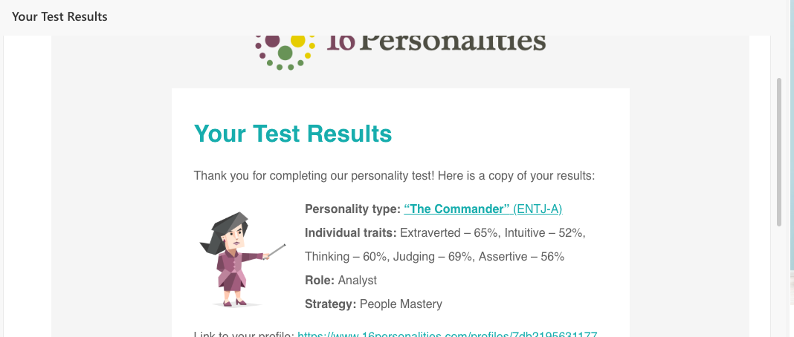
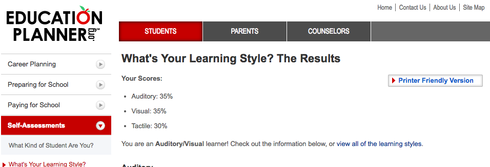
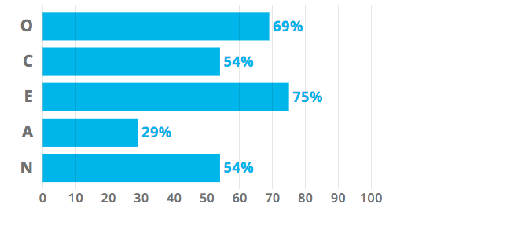

My name is Christopher Huang, student number s3787375 and you can find me at emrold@hotmail.com. I speak both Cantonese and English fluently and I was born in Sydney before moving to Byron Bay. But family is from Taishan, I am 18 and studied at Trinity Catholic College Lismore for the last 3 years of my high school | I currently play league of legends, gold 3, but I played Dota for 3 years reaching 4k MMR with a 60.37% win-rate in ranked and 2500 hours. I am in the RMIT Cue Sports club right now. I like cooking and procrastinating.
My interest in IT came naturally with the time I spent on my computer at a young age as my parents were working anytime I was awake. Living in a modern world filled with technology is also an ideal lifestyle I would like.
I chose to come to RMIT because I had been to Melbourne a few times and I always enjoyed my experience here such as having the access to all types of foods anywhere in the tight city which I love. I also knew RMIT was prestigious with IT so it was a natural choice
I expect to learn about IT within the human world and how it can interact with it.



The results mirror the same results I have taken years ago which proves that I have not changed much. The result of the Myers Briggs test represent my desire to be a leader within a project. It pleases me that I can represent my desire through these tests.
My behaviour will be based off judgement and logic, I believe I will work with business morals in order to provide the most efficient path to working in a team. I will speak more and provide my ideas more than others and attempt to represent the group. I should look for people who are experienced and are ready to work in the best way without feelings in the way.
My idea of an IT project is to design a chatterbot which can communicate with the user and the commutation occurs through keywords. It will have a casual conversation with the user and many paths will be taken. The name of the bot will be BotsFriend and I will develop the bot using Java. The bot will contain many puns and Easter-eggs. The bot can also be updated to work as a FAQ or a help bot. This will be an excellent project for my assignment as I am beginning to get into programming and this will help practice with that and allow me to explore and experiment with programming. With a chatbot, especially as a help bot, we are able to find help related to which keywords when needing help whilst on a website when live chat is down. eg. Centrelink chatbot will take keywords said and then give out relevant information. My chatbot will join the line of help bots but the original assessment will be a casual conversation bot. This will also be a way for me to gather some knowledge on my wish to work as a digital designer and add UCD knowledge into the project.
BotsFriend will continuously ask a question to keep the conversation running at the end of each sentence. The bot will begin the conversation in which the user will type the reply into the console and then using a scanner, the bot will recognise the input and then see if any of the keyword strings I have given for that response has been detected. Using ifs, else and while commands, the bot will give a reply based on the keyword it has spotted in the input by the user. The response from the robot will be instant as println’s will be used for the response. The bot will contain special responses to ’glitch’ or ‘error’ keywords which will break the bot. It will also contain movie and game references. I will also attempt to add some text to speech to bring life to the chatterbot or for blind persons. This can be either a female or male voice too. The graphics of the software will feature a software box with a place to type at the bottom and the responses from the robot in the middle. A picture of a friendly robot will also be at the top right with the name of the robot and a tagline. However, the drawbacks with this is that I will find it difficult to have some strings only apply after certain strings and I am worried I will not be able to design the chatterbot without any errors or glitches.
In order to design this application I will need my computer with access to a java program. For my project I will try to use Java Eclipse and a design application to design the graphics for my chatterbot. I will also need access to the internet to research design, some code for specific commands eg. Add text to speech and to gather some audio to use for the text to speech. My Mac will be the main source of storage for this application however I will backup the data using an online cloud storage such as google drive. In order to use these applications to design my project, I will use skills that I have learned online and during my class whilst studying my course; Computing Studies. There are no special hardware but I will have to study how to write in Java and especially how to use Eclipse and its features. The skills that I will need will come slowly as I continue to learn throughout the year and I learn what program I can use to design the graphics for my chatterbot. I am very familiar using computers and very confident that there will be no hardware related mistakes.
After the completion of my chatterbot I will have a firm grasp of how to design such a program and I will be able to use the chatterbot as an example of my work for when I try to present my skills. I will be able to upload my chatterbot to GitHub and share it while I can also have the opportunity to upgrade it into a FAQ or a text helper for websites. I will also be able to use it for UCD research and ask what users dislike about the bot. This will also help me with my upcoming assignments for programming. With the bot, users are able to have fun with computer technology and if it is upgraded to a help-bot, it will help users when they access websites.